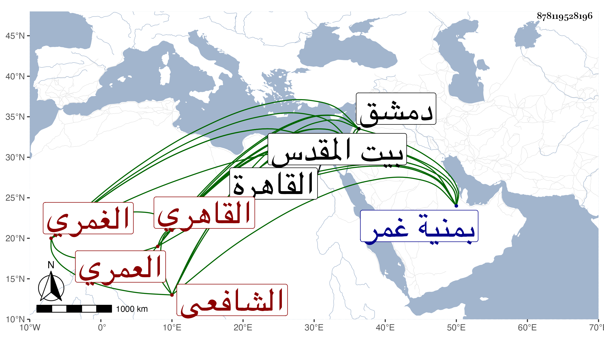

0902Sakhawi.DawLamic.ITO20230111-ara1.EIS1600.878119528196
Biography ID: 878119528196
862
علي بن عبد الوهاب بن أبي بكر بن أحمد نور الدين العمري الغمري ثم القاهري الشافعي ويعرف بابن المصلية . ولد في سنة اثنتين وأربعين تقريبا بمنية غمر وقدم القاهرة فاشتغل في فنون عند التقي والعلاء الحصنيين والزين الأبناسي ونحوهم كالبدر بن خطيب الفخرية والشرف موسى البرمكيني والفخر عثمان المقسي والشهاب العبادي ، وكذا لازمني رواية ودراية وسمع بالقاهرة وغيرها على الشناوي وغيره كعلي حفيد يوسف العجمي وأخذ في أول أمره عن أخي أبي بكر وتميز بحسن الفهم والإدراك ، وحج وجاور وكذا دخل دمشق وزار بيت المقدس واجتمع فيها بغير واحد من علمائها وأقبل على الوعظ ولم يرتق فيه وتزوج ابنة أخت أبي السعادات البلقيني مع فاقته وتقلله لمزيد رغبتها .
